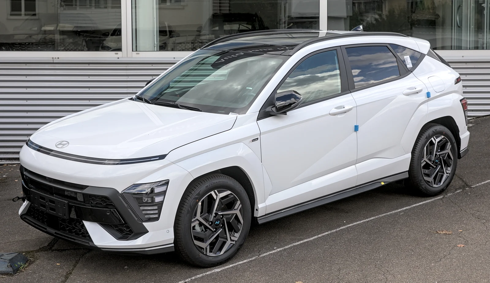
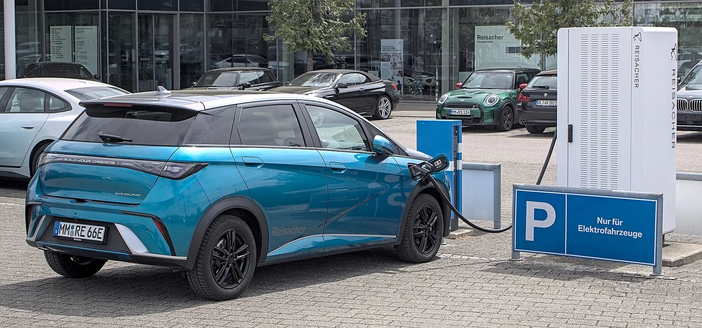

▲ 캐스퍼 일렉트릭. 프리미엄 트림은 계약 후 인도까지 28개월이 걸린다
캐스퍼 일렉트릭 프리미엄 트림을 지금 계약하면 28개월을 기다려야 합니다. 2년 4개월입니다. 그 사이 신차가 한 번 부분변경을 거칠 수도 있는 기간입니다.
보통 이런 대기는 "그만큼 잘 팔린다"로 설명됩니다. 그런데 이번 경우는 조금 다릅니다. 공장 생산량은 오히려 늘어나고 있습니다. 그런데도 대기가 길어집니다. 숫자를 하나씩 맞춰보면 그 이유가 드러납니다.
1. 28개월 — 트림에 따라 10개월이 갈린다
먼저 캐스퍼 일렉트릭의 트림별 대기 기간입니다. 프리미엄이 28개월로 가장 길고, 인스퍼레이션과 크로스가 각각 24개월, 라운지가 18개월입니다. 가솔린 모델도 1년 이상 걸립니다.
같은 차인데 트림에 따라 10개월이 갈린다는 점이 눈에 띕니다. 이는 물량 배정이 트림별로 나뉘어 있고, 특정 트림에 계약이 집중돼 있다는 뜻입니다. 실제로 대기가 가장 긴 프리미엄은 전기차 보조금과 결합했을 때 가격 대비 사양이 가장 유리한 구간으로 꼽힙니다.
역설적이지만, 대기를 줄이는 가장 빠른 방법은 트림을 낮추는 것입니다. 라운지로 내리면 18개월, 프리미엄보다 10개월 빠릅니다. 다만 그래도 1년 반입니다.
| 트림 | 대기 기간 |
|---|---|
| 프리미엄 | 28개월 |
| 인스퍼레이션 | 24개월 |
| 크로스 | 24개월 |
| 라운지 | 18개월 |
| 가솔린 모델 | 1년 이상 |

▲ 팰리세이드는 가솔린·하이브리드 모두 약 1개월이면 출고된다
2. 현대차 전 차종 출고 대기표
캐스퍼만 유독 긴 것인지, 현대차 전반이 밀린 것인지 확인하려면 라인업 전체를 봐야 합니다. 정리하면 차종별 편차가 상당히 큽니다.
| 대기 | 차종 |
|---|---|
| 1개월 | 싼타페(가솔린·HEV), 팰리세이드(가솔린·HEV), 넥쏘, 아이오닉 5, 아반떼 N, 쏘나타 택시 |
| 1.5개월 | 코나 EV, 아이오닉 5 N, 아이오닉 6, 아이오닉 9 |
| 2개월 | 쏘나타 전 사양, 그랜저(가솔린·LPi) |
| 3개월 | 코나 하이브리드, 그랜저 하이브리드 |
| 4개월 | 코나 가솔린 |
| 4~6개월 | 스타리아 EV, 베뉴 |
| 18~28개월 | 캐스퍼 일렉트릭 |
싼타페와 그랜저, 아이오닉 6, 아반떼 N은 재고를 활용하면 즉시 출고도 가능합니다. 그랜저는 썬루프를 선택하면 10월 말로 밀립니다. 코나 가솔린은 지금 계약해도 12월 출고인데, 계약이 조금만 밀리면 해를 넘깁니다.
이 표에서 확인되는 건 명확합니다. 현대차 전체가 밀린 게 아닙니다. 대부분 1~3개월이면 나옵니다. 캐스퍼 일렉트릭만 다른 세계에 있습니다. 그렇다면 원인은 회사 전체의 생산 능력이 아니라, 이 차 한 대에 걸린 구조에 있다는 뜻입니다.
3. 못 만드는 게 아니라, 여기로 안 오는 것이다
캐스퍼는 광주글로벌모터스(GGM)에서 위탁 생산됩니다. 이 공장의 생산·배분 숫자를 보면 대기의 정체가 드러납니다.
2025년 GGM은 5만8,400대를 만들었습니다. 이 중 4만2,601대, 즉 73%가 수출로 나갔습니다. 국내에 공급된 물량은 1만5,799대입니다.
그리고 2026년 계획은 이렇습니다. 총 생산은 6만1,200대로 늘어납니다. 그런데 수출이 4만6,300대로 함께 늘면서, 내수 배정은 1만4,900대로 오히려 줄었습니다.
정리하면 이렇습니다. 공장은 작년보다 2,800대를 더 만듭니다. 그런데 국내에 배정되는 물량은 작년보다 900대가 적습니다. 대기가 길어지는 원인은 생산 능력이 아니라 배분이라는 뜻입니다.
| 구분 | 2025년 | 2026년 계획 |
|---|---|---|
| 총 생산 | 5만8,400대 | 6만1,200대 (증가) |
| 수출 | 4만2,601대 (73%) | 4만6,300대 (증가) |
| 내수 | 1만5,799대 | 1만4,900대 (감소) |
제조사 입장에서 이 선택이 비합리적인 것은 아닙니다. 소형 전기차는 대당 마진이 크지 않고, 유럽 등 해외 시장에서는 환경 규제 대응을 위해 전기차 판매 실적 자체가 필요합니다. 국내에서 28개월을 기다리는 고객보다, 지금 인도해야 규제 크레딧이 잡히는 해외 물량이 먼저인 상황이 만들어집니다.
다만 소비자 입장에서 이 설명이 위로가 되지는 않습니다. 그리고 이 구조가 만든 다음 결과가 더 기이합니다.

▲ 코나는 가솔린이 4개월로 가장 길다. 전기차인 코나 EV는 1.5개월이면 나온다
4. 중고차가 신차보다 비싸지는 역전
대기가 2년을 넘어가면 시장은 스스로 답을 찾습니다. 그 결과가 중고차 가격 역전입니다.
현재 캐스퍼 중고 매물은 신차 가격보다 120~377만 원 높게 형성돼 있습니다. 감가상각이라는 자동차 시장의 기본 원리가 뒤집힌 상태입니다.
이유는 단순합니다. 28개월을 기다릴 수 없는 사람에게 지금 존재하는 캐스퍼는 중고차뿐입니다. 그 희소성에 웃돈이 붙습니다. 여기에 전기차 보조금 변수도 얽힙니다. 신차는 보조금을 받아 실구매가가 낮아지지만, 그 보조금을 받으려면 차를 인도받아야 하고, 인도까지 2년 이상 걸리는 사이 보조금 정책 자체가 바뀔 수 있습니다.
이 역전이 오래 가지는 않을 것입니다. 대기가 해소되거나 소비자가 다른 차로 옮겨가면 정상화됩니다. 문제는 후자가 이미 진행 중이라는 점입니다.

▲ BYD 돌핀. 2,450만 원부터 시작하며 계약 후 수 주 내 인수가 가능하다
5. 그 사이 팔린 차들
28개월을 기다리기로 한 사람도 있지만, 그렇지 않은 사람도 있습니다. 이들이 어디로 갔는지가 이번 사안의 진짜 결과입니다.
가장 직접적인 수혜자는 BYD 돌핀입니다. 2,450만 원부터 시작하고, 계약 후 수 주 내에 인수가 가능합니다. 가격대와 차급이 캐스퍼 일렉트릭과 정면으로 겹치는데, 대기 기간에서만 28개월 대 수 주라는 격차가 납니다.
국내 대안으로는 기아 레이 EV가 약 10개월입니다. 캐스퍼보다 훨씬 짧지만 여전히 짧다고 하기는 어렵습니다.
수입 소형 전기차 쪽도 반사이익을 봤습니다. 미니는 2025년 글로벌 전기차 판매가 10만 대를 넘기며 전년 대비 88% 늘었고, 국내 판매에서 전기차가 차지하는 비중이 24%에 이릅니다. 국고보조금은 에이스맨 E가 400만 원, 쿠퍼 SE가 396만 원 수준으로 책정돼 있습니다.
결국 출고 대기는 단순한 불편이 아니라 판매 기회가 통째로 넘어가는 사건입니다. 국산차 가격 경쟁력이 흔들리는 흐름과도 정확히 맞물립니다.
6. 지금 계약한다면 — 확인할 세 가지
첫째, 트림을 바꿔서 얼마나 당겨지는지 물어봐야 합니다. 캐스퍼 일렉트릭은 프리미엄과 라운지의 대기 차이가 10개월입니다. 원하는 옵션이 상위 트림에만 있는지, 아니면 하위 트림에 개별 선택이 가능한지 확인하면 선택지가 생깁니다.
둘째, 재고차 여부를 반드시 확인해야 합니다. 싼타페, 그랜저, 아이오닉 6, 아반떼 N은 재고를 쓰면 즉시 출고가 가능합니다. 색상과 옵션이 제한되지만, 몇 달을 아낄 수 있습니다. 제네시스도 재고 활용 시 즉시 출고가 가능한 경우가 있습니다.
셋째, 보조금 기준 연도를 확인해야 합니다. 전기차 보조금은 계약 시점이 아니라 출고·등록 시점의 기준이 적용됩니다. 대기가 해를 넘기면 예상했던 금액과 달라질 수 있고, 지자체 예산이 소진되면 다음 해로 넘어갑니다. 28개월짜리 대기라면 이 변수는 가정이 아니라 확정에 가깝습니다.
정리하면, 캐스퍼 일렉트릭의 28개월은 공장이 못 만들어서 생긴 숫자가 아닙니다. 생산은 늘어나는데 국내 몫은 줄어드는 배분의 결과이고, 그 결과가 중고차 가격 역전과 경쟁 브랜드로의 이탈로 이어지고 있습니다. 대기 기간은 시장 상황에 따라 계속 변하므로, 계약 전 대리점에서 최신 일정을 다시 확인하시기 바랍니다.